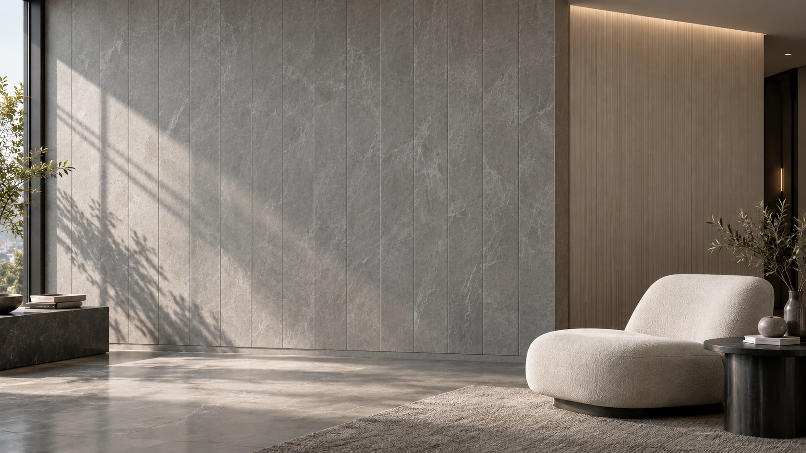
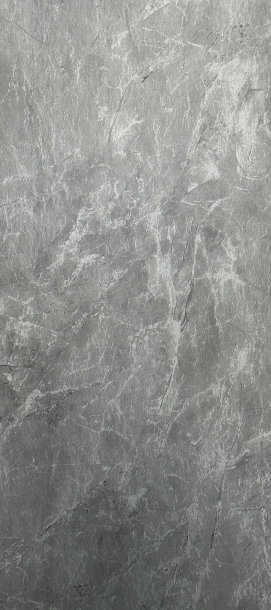
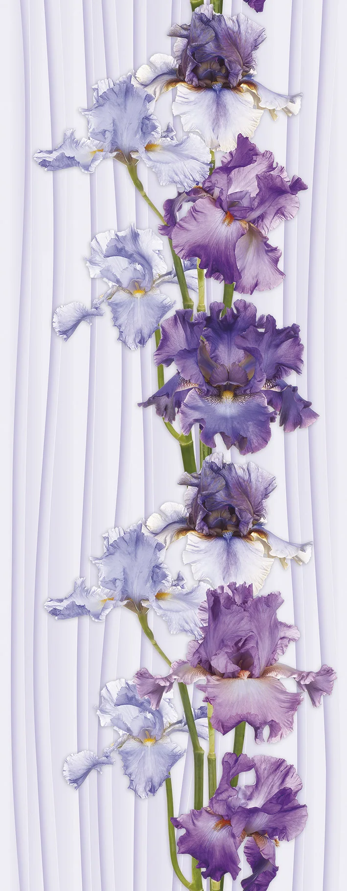
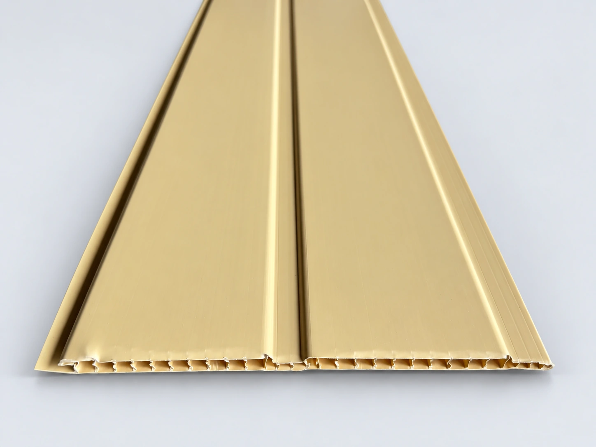
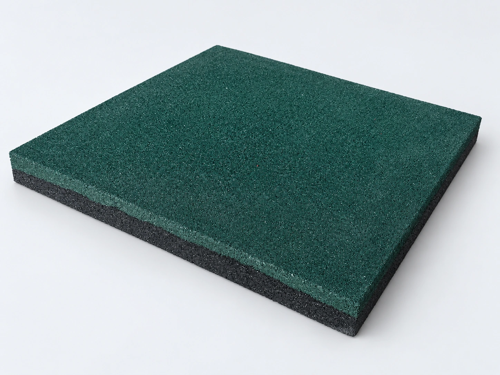
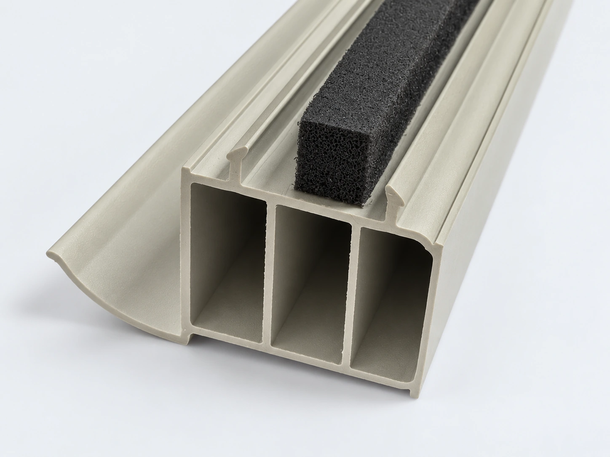
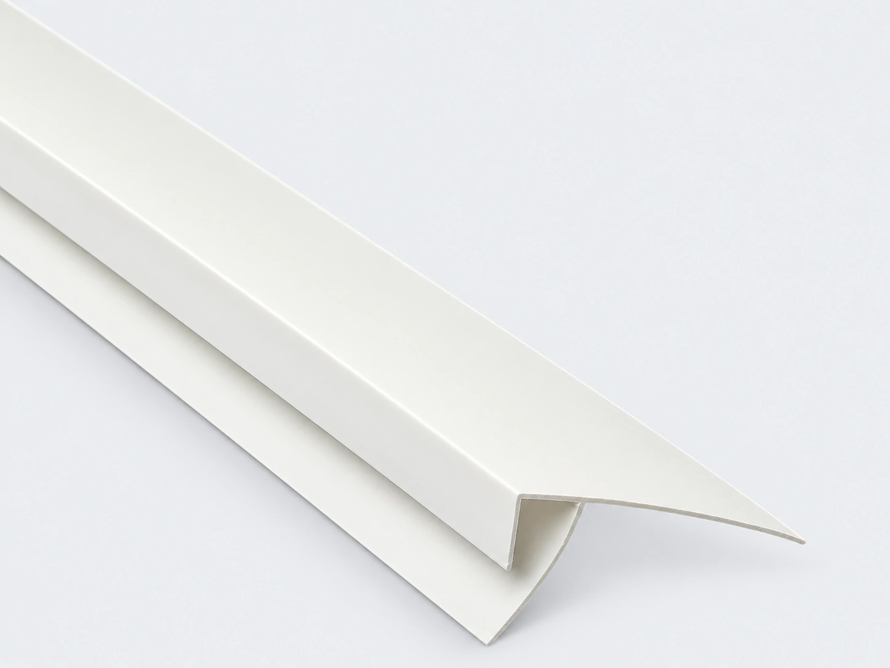
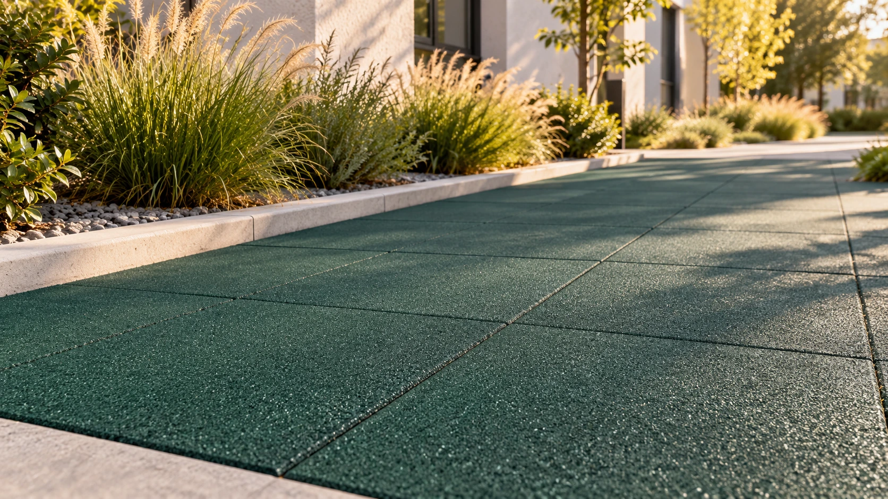

Поверхность и декор
Исходные фотографии показывают рисунок, цвет и характер поверхности. Ламинированные, термопереводные и глянцевые исполнения представлены отдельно.
Панели и вагонка для интерьера. Резиновая плитка для покрытий. Профили и фурнитура для монтажных узлов.

Материалы для основных плоскостей и детали, которые оформляют стыки, кромки и примыкания.

Ламинированные декоры, белый глянец и трёхсекционные исполнения «Хром» и «Золото». Камерный профиль и соединение кромок.
Смотреть продукцию 22
Самостоятельная серия с термопереводным рисунком. Камень, древесные и графические декоры для облицовки интерьера.
Смотреть продукцию 30
Ламели шириной 200 мм с выраженным швом. Три цвета: «Песок», «Снег» и «Шоколад».
Смотреть продукцию 3
Рельефная и зернистая поверхность. В линейке — плитка 500 × 500 мм толщиной 20 и 40 мм.
Смотреть продукцию 5
Типоразмеры 23 и 38,5 мм. Двухкамерные и трёхкамерные исполнения с уплотнителем.
Смотреть продукцию 3
Стартовые и соединительные профили, внутренние и наружные углы, плинтусы. Для завершения облицовки.
Смотреть продукцию 11Посмотрите, какую задачу решает материал, и перейдите к подходящему разделу каталога.
Панели формируют сплошную декоративную плоскость. Шовная вагонка создаёт регулярный ритм ламелей. Фурнитура оформляет углы и примыкания.

Плитка задаёт сетку швов на дорожках и площадках. Подбор толщины, подготовка основания и способ фиксации зависят от условий объекта.
Подставочный профиль располагается в нижней части оконной конструкции. Геометрию зацепов и посадочных поверхностей подбирают под конкретную оконную систему.
Интерьер и дорожка — визуализации применения. Декор и оттенок выбирайте по фотографиям и физическому образцу.
Эти параметры определяют внешний вид облицовки и работу монтажного узла. В каталоге их можно рассмотреть до заказа.
Рассмотреть конструкцию панелиИсходные фотографии показывают рисунок, цвет и характер поверхности. Ламинированные, термопереводные и глянцевые исполнения представлены отдельно.
Стенки, внутренние перемычки, продольные камеры и профиль кромок — в интерактивном разборе каждого изделия.
Толщина панели, посадочный размер фурнитуры и конфигурация оконного профиля согласуются при комплектации заказа.
Сохраните нужные позиции в подборку. Укажите количество и размеры — это поможет подготовить запрос.